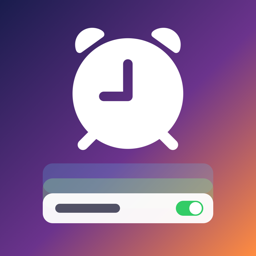

Alarm ProPolitique de confidentialité
Dernière mise à jour : 11 octobre 2026
Données stockées sur votre appareil
- Alarmes, groupes, réglages et préférences sont stockés sur votre appareil et ne sont pas envoyés à nos serveurs.
- Les fichiers audio ajoutés sont copiés dans l’app sur votre appareil pour servir de sons d’alarme et ne sont envoyés nulle part.
- Votre Apple Watch reçoit un résumé de vos alarmes directement depuis votre iPhone.
Autorisations
- Alarmes (iPhone) : nécessaire pour que les alarmes sonnent même en mode silencieux ou avec un mode de concentration.
- Notifications (Mac) : nécessaire pour afficher les alarmes en notifications sur Mac.
Publicité
La version iPhone gratuite affiche une bannière de Google AdMob. Lorsque la loi l’exige (ex. UE), votre consentement est demandé d’abord ; sans consentement, seules des publicités non personnalisées s’affichent. Les publicités sont limitées à un contenu tous publics ; les catégories jeux d’argent, rencontres et contenu sexuel sont bloquées. L’app Mac est sans publicité, tout comme Premium. Politique de confidentialité de Google : https://policies.google.com/privacy
Abonnement et dons
Premium et dons sont traités par Apple via l’App Store ; nous ne voyons jamais vos informations de paiement. Vous pouvez résilier l’abonnement à tout moment dans Réglages > Compte Apple > Abonnements.
Enfants
Alarm Pro ne collecte pas sciemment de données personnelles d’enfants.
Suppression des données
Supprimer l’app efface toutes les alarmes, groupes et sons de votre appareil.
Contact
Questions ou signalements : github.com/mucobulut/alarmpro/issues